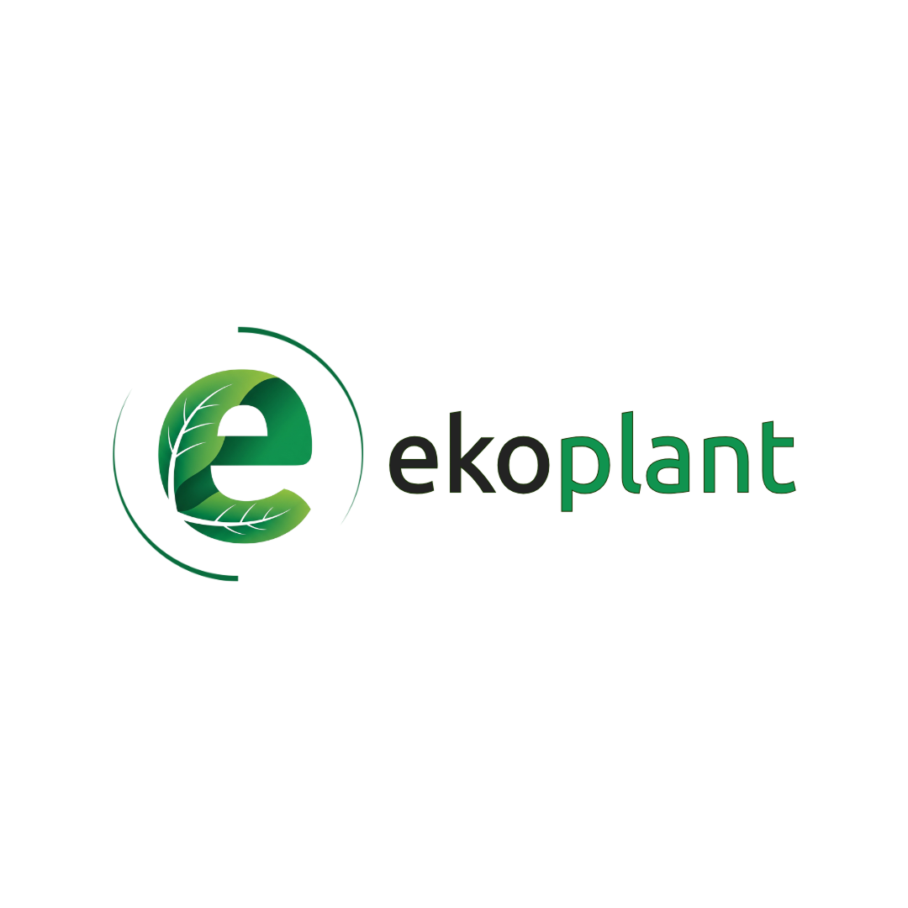
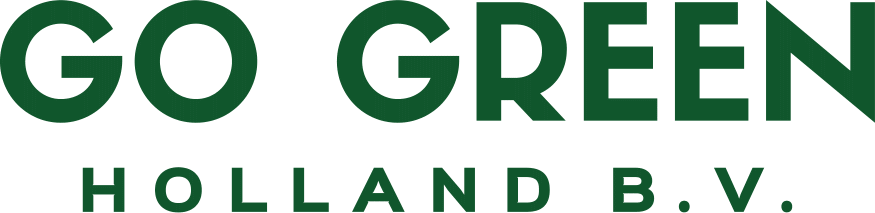
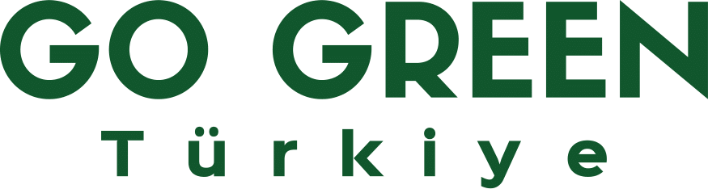
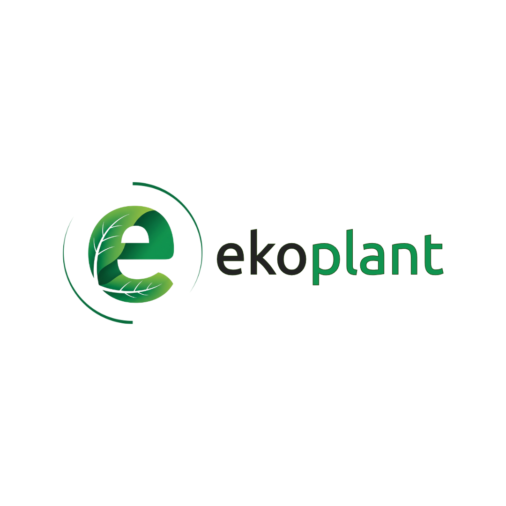
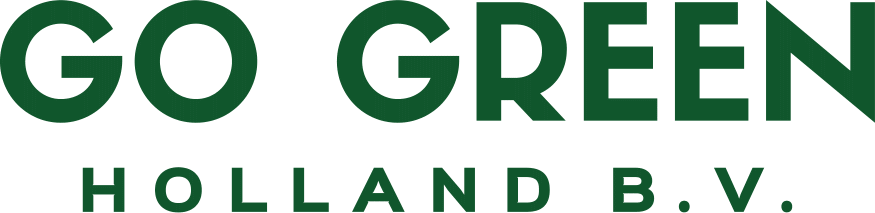
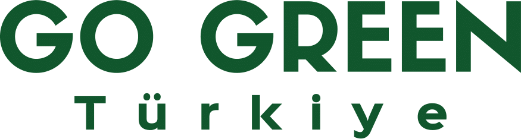
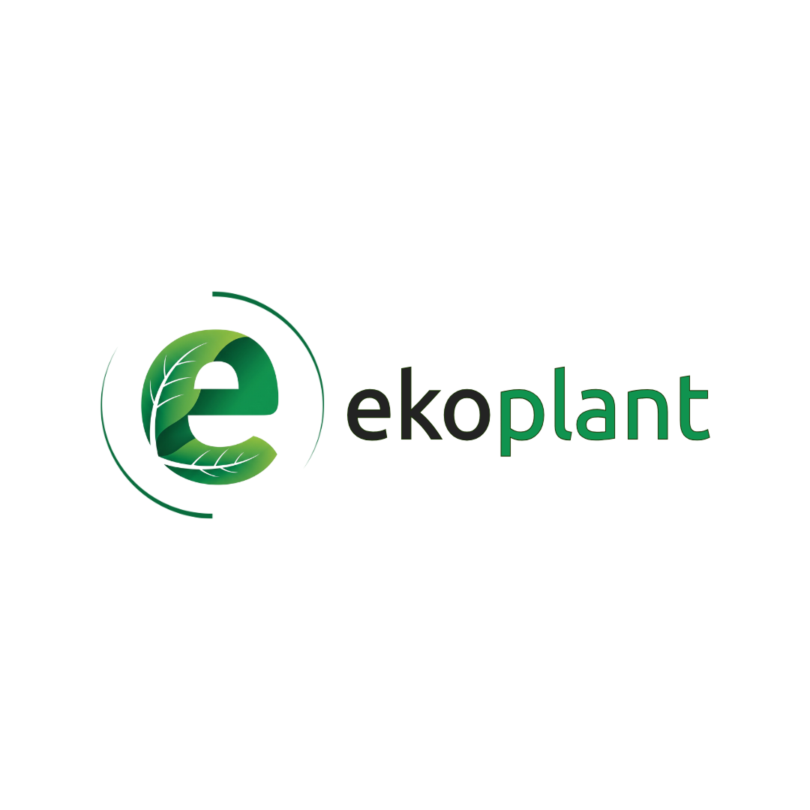
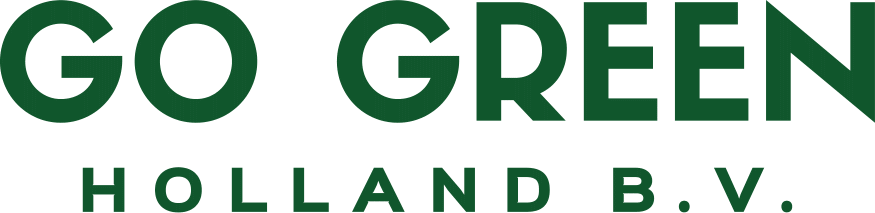
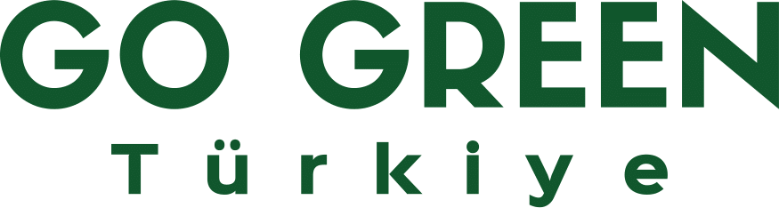

Süs bitkilerinde ortak emeğin gücüyle, yerelden dünyaya...
Yaskoop, Yalova’nın Çiftlikköy ilçesinde kurulmuş, süs bitkileri alanında faaliyet gösteren 10 üretici ortağın bir araya gelerek oluşturduğu bir işletme kooperatifidir. Amacımız; birlikte üretmek, birlikte gelişmek ve dayanışma içinde büyümektir. Her bir üyemiz, sektörde uzun yıllara dayanan tecrübesiyle üretim süreçlerine ortak katkı sağlamaktadır. Sürdürülebilirlik, kalite ve çevreye duyarlılık ilkeleriyle hareket ediyor; üretimde ortak standartları benimseyerek verimliliği artırmayı hedefliyoruz. Hem yerel pazarda hem de uluslararası arenada rekabet gücü yüksek ürünler sunmayı amaçlıyoruz. Bireysel çabaların ötesinde, ortak vizyon ve sinerji ile daha güçlü bir yapı oluşturmak için çalışıyoruz. Yaskoop olarak, kooperatifçiliğin dönüştürücü gücüne, işletmelerin birlikte büyümesinin sağlayacağı avantaja ve ortak başarı kültürünün getireceği toplumsal katkıya yürekten inanıyoruz. Küçük üreticilerin birlikteliğiyle büyük farklar yaratmak için buradayız.
Yaskoop’un vizyonu, süs bitkileri üretiminde uluslararası standartları yakalamış, çevreye duyarlı ve sürdürülebilir bir kooperatif modeli oluşturmaktır. Ortak akla dayalı, katılımcı ve eşit söz hakkına sahip bir yapıyla sektöre yön vermeyi hedefliyoruz. Üretimde kaliteyi artırmak, pazar olanaklarını genişletmek ve üyelerimizin refahını yükseltmek önceliklerimiz arasındadır. Genç üreticilerin desteklendiği, sosyal sorumluluk bilincine sahip bir üretim kültürü benimsiyoruz. Kooperatifçilik ruhunu yaşatarak toplumsal fayda sağlamayı görev biliyoruz. Doğaya duyarlı üretim anlayışımızla sürdürülebilir kalkınmayı destekliyoruz. Ortak emeğe ve birlikteliğin gücüne olan inancımızla hareket ediyoruz. Yerli üreticinin gücünü birleştirerek ulusal ve uluslararası ölçekte saygın bir marka olmayı amaçlıyoruz.



Adres:
Mehmet Akif Ersoy mah. Namık Kemal cad. No:2 İç kapı no:3 Çiftlikköy/YALOVA
Telefon: +(90) 5352936007
Email: info@yaskoop.com